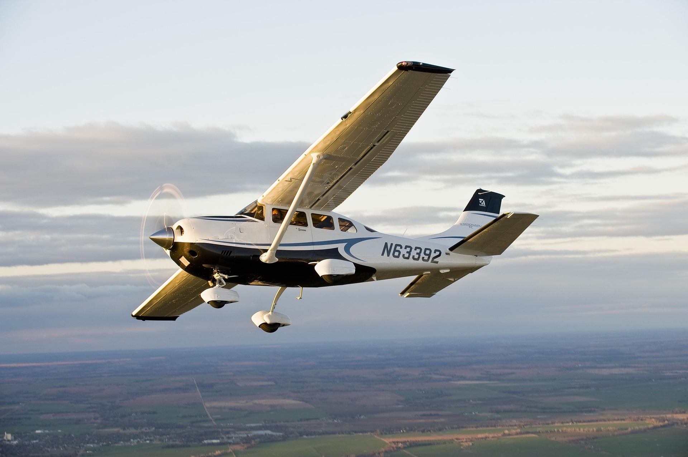

Una avioneta es, coloquialmente, un avión pequeño y de poca potencia, generalmente diseñado para pocos pasajeros y vuelos de corto alcance. Técnicamente, no es un término oficial en aeronáutica, prefiriéndose denominaciones como "aeronave ligera" o "avión pequeño". Suelen usarse para recreación, instrucción o transporte ligero.